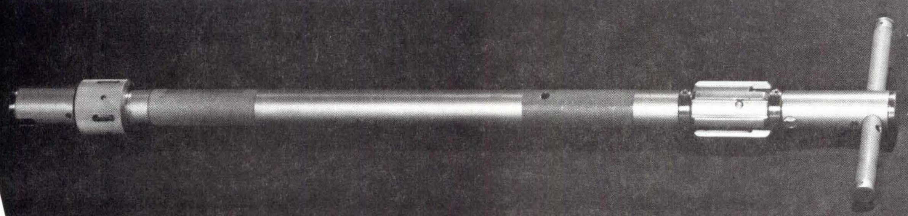
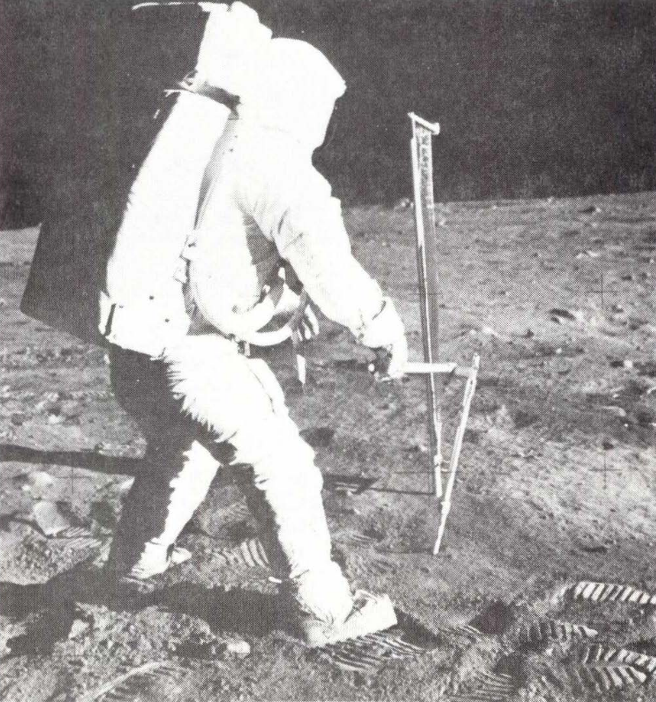
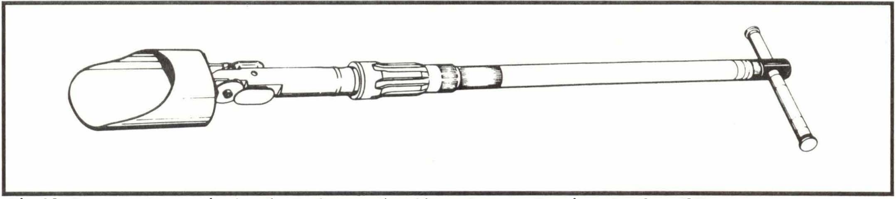
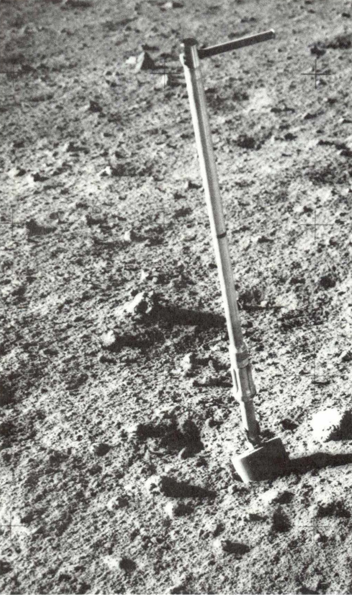

Extension Handle
Apollo 11, 12, 14, 15, 16, & 17 Missions
Description
Two styles of extension handles were used on
the moon. The model used on the later missions was
slightly longer, heavier and more streamlined in appearance.
A single extension handle could be used with a scoop,
hammer, rake, core tube or drive tube, thus, saving the added
weight of each tool having a long handle. When
attached to a core tube or a drive tube, the extension handle
was pounded with the hammer to drive the tubes into the
soil.
Physical Attributes
-
Weight
590 g (Light) | 770 g (Heavy)
-
Dimensions
Overall length 41 cm (Light) | 39 cm (Heavy)
Head Length 61 cm (light) | 76 cm (Heavy)
Width of 'T' Handle 15.5 cm (All) -
Materials
The T' handle and the main shaft of the extension handle were made from aluminum alloy 6061/62- T6. The end pounded by the hammer was reinforced with 303 stainless steel. The long shaft was aluminum alloy 2024- T3, and the end pounded by the hammer and holding the T handle was 303/316 stainless steel.
-
Manufacturer
NASA, Johnson Space Center
Images
-

Shorter style extension handle used on early Apollo missions
(NASA photo S69-31844) -

Shorter style extension handle attached to core tube and being driven with a hammer by astronaut Buzz Aldrin on Apollo 11
(NASA photo AS l l-40-5964) -

Longer style extension handle attached to adjustable-angle scoop -

Longer style extension handle attached to scoop at Apollo 16 site
(NASA photo AS 16-109-17846)